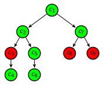

Optimization with Preferences

Many combinatorial optimization problems are conveniently expressed using a constraint-based modeling language. They are then solved by powerful constraint programming or mathematical programming solvers.
We provide support for over-constrained problems or problems where desirable properties can be modeled as optional (soft) constraints. Importance is expressed only by means of relations between constraints (see this 1 slide to get an idea). Our library extensions are built on top of MiniZinc that facilitates modeling combinatorial optimization problems for various solvers. The library includes:
- Convenient expression of soft constraint problems using constraint relationships
- Automatic translation to weighted CSP
- Generic search heuristics
- Consistency checks of the specified relationships
Quick Example
First, we define variables, domains, and conventional hard constraintsinclude "classic_o.mzn"; % output of minibrass
include "soft_constraints/pvs_gen_search.mzn";
% the basic, "classic" CSP
set of int: DOM = 1..3;
var DOM: x; var DOM: y; var DOM: z;
solve
:: int_search([x,y,z], input_order, indomain_min, complete)
search pvs_BAB();
output ["x = \(x); y = \(y); z = \(z)"] ++
[ "\nValuations: overall = \(topLevelObjective)\n"];
include "defs.mbr";
PVS: cr1 = new ConstraintPreferences("cr1") {
soft-constraint c1: 'x + 1 = y';
soft-constraint c2: 'z = y + 2';
soft-constraint c3: 'x + y <= 3';
crEdges : '[| mbr.c2, mbr.c1 | mbr.c3, mbr.c1 |]';
useSPD: 'false' ;
};
solve cr1;
Download and Installation
Quickest start (only requires MiniBrass and MiniZinc):
- Download and install the newest MiniZinc IDE version from http://www.minizinc.org/
- Download mbr2mzn.jar
- Download soft_constraints.zip and unpack it
- Locate the directory "./share/minizinc/std" of your MiniZinc installation
- Copy the directory "soft_constraints" into "./share/minizinc/std"
- Download and extract the code examples
- Compile the preference model by using
java -jar mbr2mzn.jar -m smallexample_minizinc.mbr - Run
minizinc smallexample_minizinc.mzn: Your output should statex = 1; y = 2; z = 1 Valuations: overall = 1 ---------- ==========
Slightly slower start (requires MiniBrass, MiniZinc and MiniSearch):
- Build MiniSearch according to the instructions at MiniSearch
- Download mbr2mzn.jar
- Download soft-constraints.zip and unpack it
- Locate the directory "./share/minizinc/std" of your MiniSearch installation
- Copy the directory "soft_constraints" into "./share/minizinc/std"
- Download and extract the code examples
- Compile the preference model by using
java -jar mbr2mzn.jar smallexample_minisearch.mbr - Run
minisearch smallexample_minisearch.mzn: Your output should stateIntermediate solution:x = 1; y = 1; z = 1 Valuations: overall = 1..2 ---------- Intermediate solution:x = 1; y = 1; z = 3 Valuations: overall = 1..1 ---------- Intermediate solution:x = 1; y = 2; z = 1 Valuations: overall = 2..2 ---------- ==========
After starting:
Have a look at these case studies to get a better idea. We will continously improve these pages, but for starters please refer to the slides.
- Case Studies
- Step-by-step conversion of a MiniZinc problem
- Language Features
- Soft Global Constraints
- Cost Function Networks
Citing
If you plan to use constraint relationships in your research, please consider citing
@INPROCEEDINGS{Schiendorfer13,
author = {Alexander Schiendorfer and
Jan-Philipp Steghöfer and
Alexander Knapp and
Florian Nafz and
Wolfgang Reif},
title = {{Constraint Relationships for Soft Constraints}},
editor = {Max Bramer and
Miltos Petridis},
booktitle = {Proc. 33\textsuperscript{rd} SGAI Int. Conf.
Innovative Techniques and Applications of Artificial Intelligence (AI'13)},
publisher = {Springer},
year = {2013},
pages = {241-255},
nolanguage = {English}
}
Authors and Contributors
- Alexander Schiendorfer (@Alexander-Schiendorfer)
- Alexander Knapp
Support or Contact
For general information and support please contact @Alexander-Schiendorfer.
Naming
Cold forming is possible with brass alloys containing up to 37% zinc. At higher zinc rates, only warm forming at temperatures > 600 °C is possible.German Wikipedia